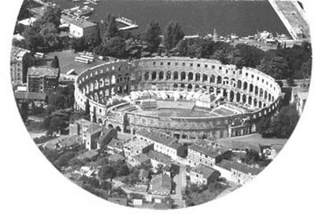

Despre istroromâni se știe și se publică mult prea puțin; doar istoricii și dialectologii se preocupă de existența acestei populații trăitoare în extremitatea vestică a românității, care vorbește unul dintre cele patru dialecte ale limbii române (dacoromâna, în nordul Dunării, meglenoromâna, aromâna și istroromâna, în spațiul sud-dunărean sau balcanic).
O știre recentă ni-i aduce în actualitate: la 4 martie a.c., Asociația Culturală Istroromână "Andrei Glavina" a încheiat festivitățile etno-folclorice și cultural-artistice, desfășurate în principalele orașe croate, inclusiv Zagrebul, cu un amplu carnaval istroromân, în localitatea Jeiăn, vestită în zonă pentru costumele populare, cântecele și dansurile străvechi ale populației istroromâne din centrul peninsulei Istria. Jeiănul se află cam la egală distanță (circa 25 de km) de orașul-port Rijeka și faimoasa stațiune Opatija-Abbazia, devenind celebru tocmai datorită acestui carnaval, mediatizat ani în șir de toate radio-televiziunile croate; numai ale noastre au lipsit, spre dezamăgirea organizatorilor, care așteptau un semn că frații lor mai mari nu i-au uitat!
Fără a intra în amănunte privind istoria acestui neam, trebuie să punctăm câteva din momentele exisțentei sale. Minusculul grup al istroromânilor este descendentul romanității orientale, trăind astăzi în mai puțin de zece asezări rurale, de-o parte și alta a Muntelui Ucika Gora (Monte Maggiore), numărând circa 1.500 de persoane (mai puțin de o mie sunt vorbitori activi). În Evul Mediu, li se spunea fie "vlahi," fie "morlaci," "cici" sau "rumeri," ocupăndu-se în principal cu creșterea animalelor și valorificarea produselor acestora, practicand o agricultură de subzistență. Ca și vânătoarea și exploatarea lemnului. În totalitate, au fost și sunt catolici, în deplin acord cu italienii din apropiere (Rijeka se numea Fiume și făcea parte din Regatul Italian), încercările croaților de slavizare la cumpăna secolelor XIX-XX dând greș. Este perioada în care și-a început activitatea de emancipare a istroromânilor Andrei Glavina, considerat de contemporani "apostol național" (Sextil Pușcariu, într-un articol publicat în 1925, la puțin timp după moartea acestei figuri emblematice a istroromânilor). Andrei Glavina s-a născut la 30 martie 1881, la Sușnievița (Valdarsa); adolescent fiind, a fost adus să studieze în România, după care s-a întors în Istria, ca învățător, publicând în 1905 prima lucrare în dialect, un calendar adresat conaționalilor săi: Calindaru lu Rumeri din Istria cu figure lucrat parvea votea de Andreiu Glavina și Constantin Diculescu. Tot el a deschis, în 1921, la Valdarsa, prima școala românească din Istria, cu numele simbolic "Împăratul Traian". Viața acestei școli a fost scurtă: în 1925 româna a dispărut, rămânând doar italiana, pentru ca după al doilea război mondial să se predea doar în limba croată (Gheorghe Zbuchea, "Istroromanii - un grup mic, dar cu suflet mare," Magazin Istoric, martie 2001).
Asociația Culturală Istroromână "Andrei Glavina" a fost înființată în 1994, la Trieste, datorită eforturilor și abnegației domnului dr. Emil Petru Rațiu, din Roma, pentru a menține identitatea etnică a istroromânilor. Pe lângă multe alte domenii și acțiuni, președintele asociației a cerut oficial "recunoașterea legală a istroromânilor, precum și a populației românești din regiunea Medimure, ca minoritate națională, cu toate drepturile ce le revin acestora". Un fapt de-a dreptul incredibil: Uniunea Democrată a Românilor din Croația, reprezentând interesele a circa 50.000 de români, este sfătuită, de către "Oficiul pentru comunitățile etnice și naționale sau minorități," din Guvernul Republicii Croate, să colaboreze cu organizațiile de etnie romă, pentru a se bucura de ajutor financiar din partea guvernului (țiganii fiind singurii recunoscuți cu drept de sprijin)! Se spune într-o Adresă din 5 mai 1998...
Cu toate aceste mari discriminări și neajunsuri, dr. Emil Petru Rațiu nu s-a dat bătut și a reușit să organizeze Primul Simpozion Internațional dedicat vreodată istroromânilor, desfășurat la Facultatea de litere din Pola (30 martie - 1 aprilie 2000), în orașul în care a murit și este îngropat Andrei Glavina. Gazdă a fost profesorul Goran Filipi, care a vorbit de necesitatea unor măsuri concrete pentru oprirea declinului îngrijorător al numărului vorbitorilor în dialectul istroromân. Lucrările Congresului de la Pola, cum a fost numit simpozionul, au scos în evidență necesitatea coordonării acțiunilor guvernelor român și croat pentru deschiderea fără întârziere a cursurilor școlare în dialect, introducerea în Croația a unor emisiuni radio-tv în istroromână și organizarea de manifestări publice a etniei în localitățile unde mai trăiesc frații noștri, păstrători ai unei comori neprețuite. Așa s-a ajuns, de la Pola la Carnavalul istroromânilor, devenit emblematic pentru perenitatea spiritualității românești în sudul Dunării!
O întrebare pentru cercetătorii lingviști: numele localității Jeiăn vine de la Jian-Jianul sau și de la Jiu-Jiul, știind că, în vremea Imperiului Habsburgic, mulți olteni au emigrat/circulat în "provinciile" acestuia?
March 15, 2003
© 2003 Curierul Național